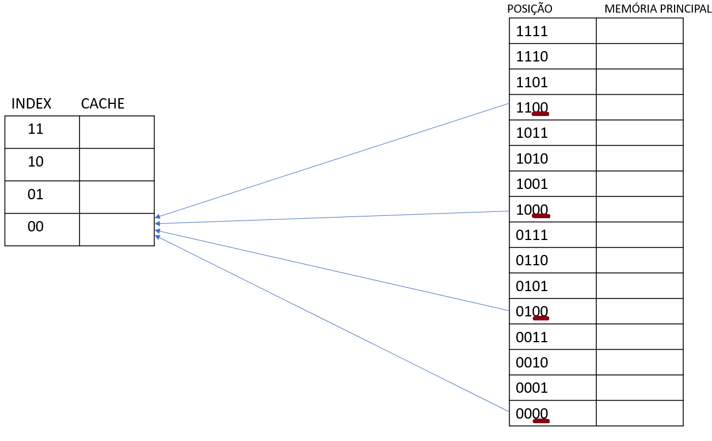
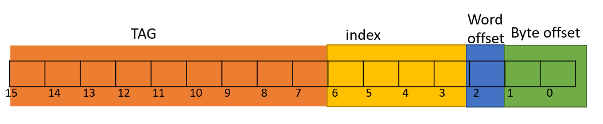
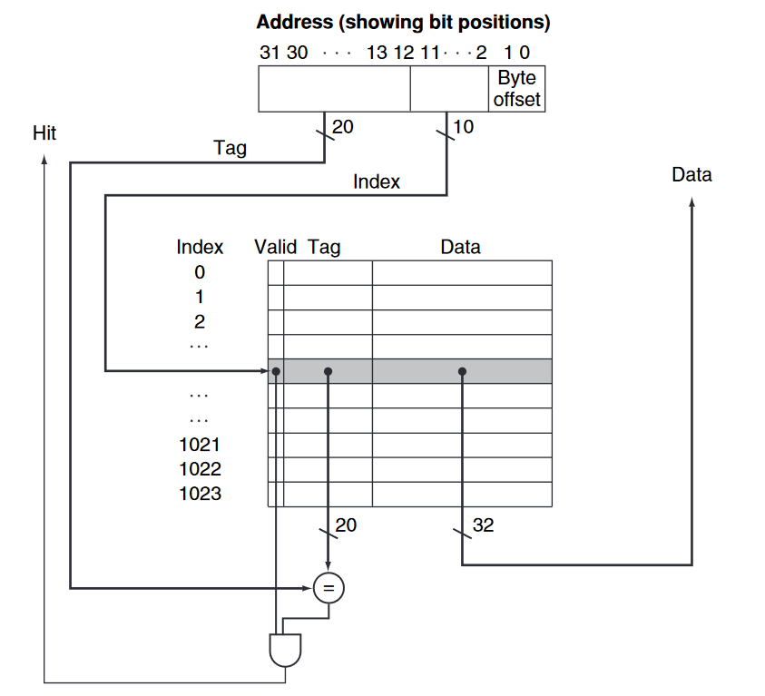

O que é o mapeamento direto?
O mapeamento direto é o método mais simples entre as funções de mapeamento da memória cache, no qual cada bloco da memória memória principal é mapeado em uma posição fixa na cache, dada pela seguinte função matemática:
i = j mod m
Onde:
i -> número do bloco da cache. É chamado de index.
j -> número do bloco da memória principal.
m -> número total de blocos da cache.
mod -> Resto da divisão entre j e m.
Segue um exemplo de como fica uma parte do mapeamento de uma cache com 4 blocos e uma memória principal de 16 bytes. Os blocos possuem tamanho de 1 palavra.

Se o endereço termina em 00, o bloco deve ser mapeado no index 00 da cache (j mod 4 = 0).
Se o endereço termina em 01, o bloco deve ser mapeado no index 01 da cache (j mod 4 = 1).
Se o endereço termina em 10, o bloco deve ser mapeado no index 10 da cache (j mod 4 = 2).
Se o endereço termina em 11, o bloco deve ser mapeado no index 11 da cache (j mod 4 = 3).
A seta em azul indica onde que os blocos da memória principal que são multiplos de 4 (resultado de j mod 4 = 0) devem ser mapeados.
Note que os dois bits menos significativos indicam o index, já que são necessários dois bits para representar as 4 posições na memória cache. Se a cache tivesse 8 posições, seriam necessários três bits para representar o index e assim por diante (2n = m, onde n indica a quantidade bits do index).
No exemplo, 2n = 4, portanto n = 2.
Problema de colisão
Como saber qual bloco da memória principal está ocupando determinado bloco na cache?
É determinado um campo no endereço chamado de TAG.
No exemplo anterior temos os possíveis blocos que podem ocupar a posição 00 da cache: 0000, 0100, 1000 e 1100. Ou seja, os dois bits menos significativos são iguais para todos (00) e os dois bits mais significativos são diferentes para todos. Assim é possível utilizar esses dois bits mais significativos para identificar qual é o bloco da memória principal que ocupa o bloco da cache. Esses bits recebem o nome de TAG.
E se o bloco da cache não estiver ocupado?
É determinado um campo na estrutura da cache chamado de valid, que indica se há um endereço válido ou não nesse index.
Organização da cache
A cache possui a seguinte estrutura:
- Index: Posição do bloco na cache.
- Valid: Indica se contém um endereço valido.
- TAG: Indica qual o bloco da memória principal está nesse index da cache.
- Data: Conteúdo do bloco da memória principal que está nesse index da cache.
OBS: Figura representa uma cache de 4 blocos.
Divisão de endereço
O endereço é dividido em 4 campos:
- Byte offset: Deslocamento do byte dentro da palavra.
- Word offset: Deslocamento da palavra dentro do bloco.
- Index: Resultado da operação j mod m mostrado anteriormente. O tamanho do index é a quantidade de bits necessario para representar todas as posições disponíveis na cache. Ex: se a cache possui 4 posições é necessário 2 bits para representar todas as posições, portanto o tamanho do index será de 2 bits.
- Tag: Indica qual bloco da memória principal está ocupando determinado index na cache. É representado por todo o restante do endereço.
Segue um exemplo para um endereço de 16 bits com palavra de 4 bytes, bloco de 2 palavras e uma cache de 16 blocos.
Como isso é implementado
Exemplo do uso de mapeamento direto em uma cache de 1024 blocos, com uma memória primária de 32 bits com palavra de 4 bytes e blocos de 1 palavra.
A porta AND indica se houve ou não acerto. Se o index for válido e a TAG presente nesse index for igual a TAG presento no endereço, é emitido um sinal que houve um acerto. Sempre vai emitir que houve uma falha de acerto se esse index não for válido ou se a TAG presente na cache não coincidir com a TAG presente no endereço.
Figura retirada do livro Computer Organization and Design: The Hardware/Software Interface by David A Patterson John L Hennessy and John L. Hennessy , página 389.
Vantagens
- Baixo custo de hardware.
- Implementação mais fácil.
- Método mais simples de mapeamento da cache.
Desvantagens
-
Cada bloco da memória é mapeado em uma posição fixa na cache.
Assim, pode acontecer de blocos que são mapeados na mesma posição na cache serem requesitados várias vezes seguidas, com isso, esses blocos terão que ser retirados e inseridos na cache várias vezes seguidas, o que não é eficiente, já que ocorrerá uma quantidade elevada de miss hit, gerando uma taxa alta de falha.